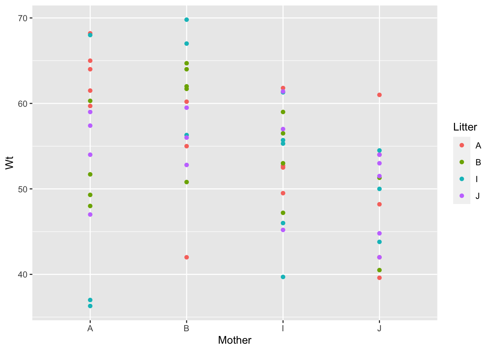
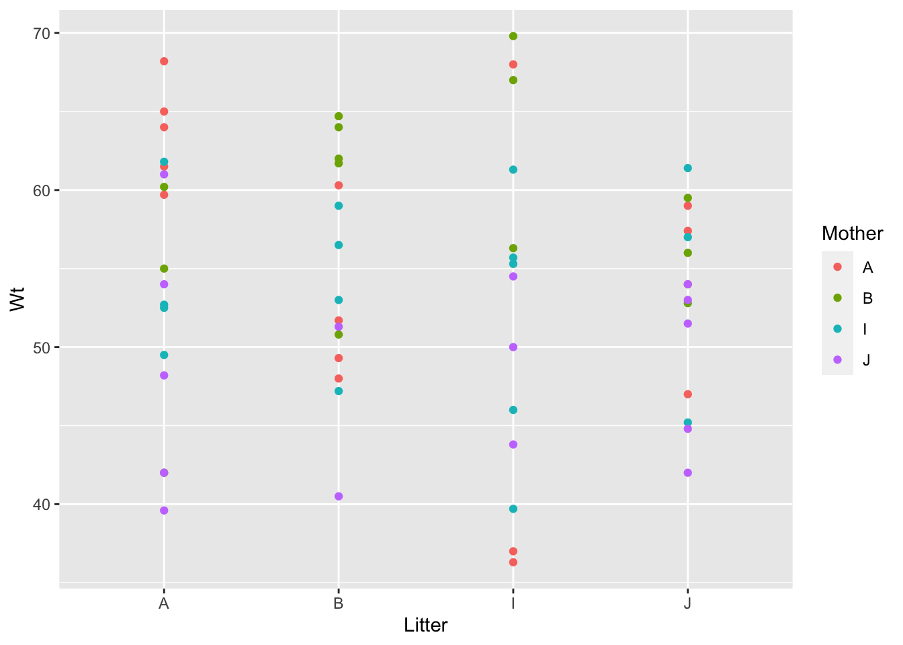
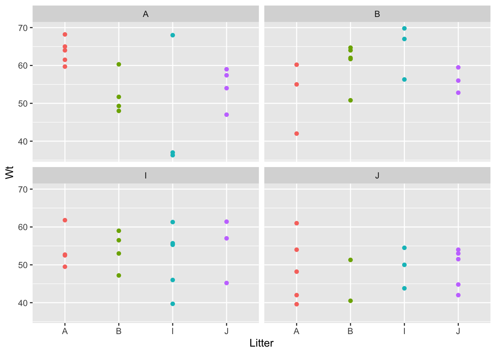
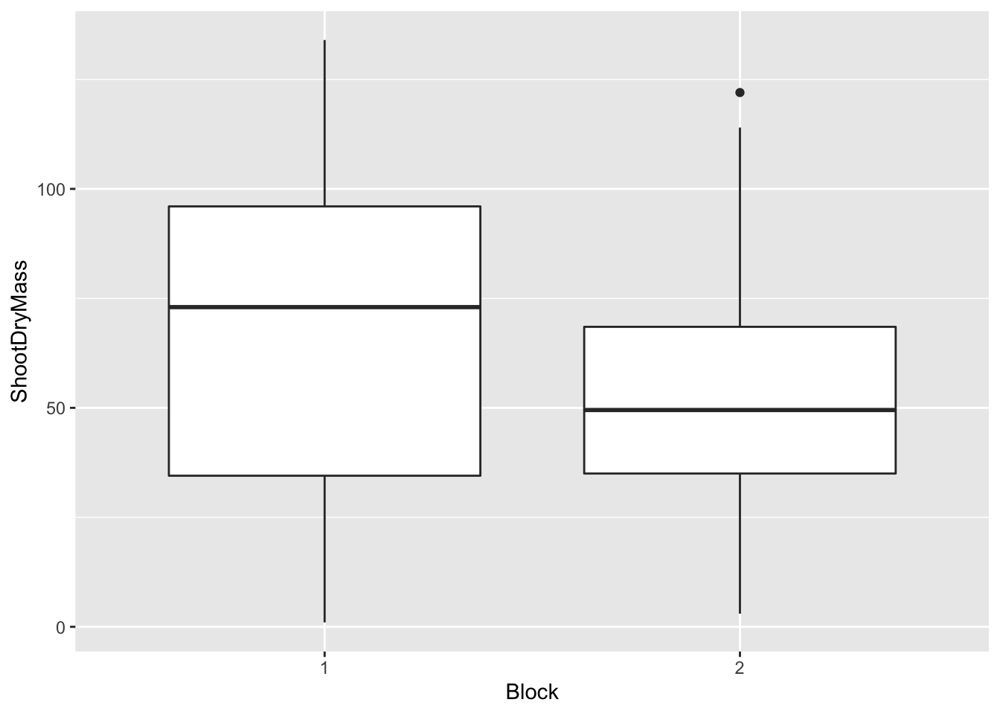
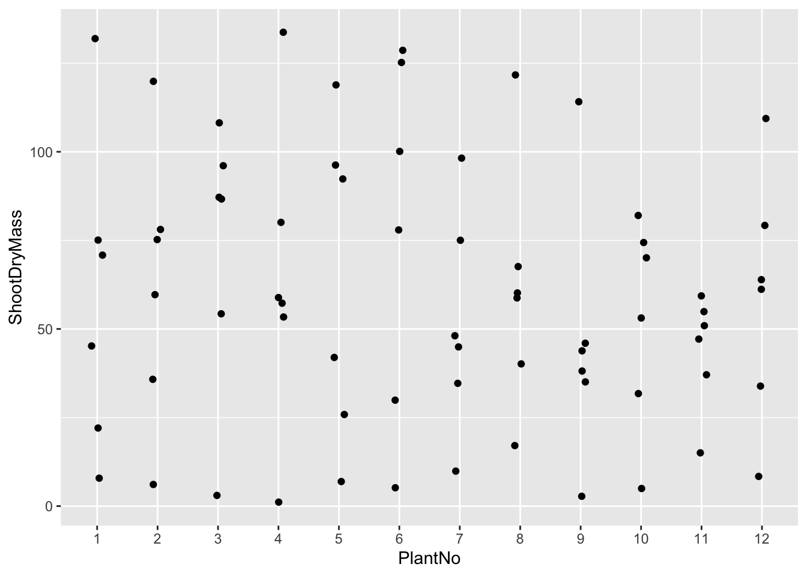
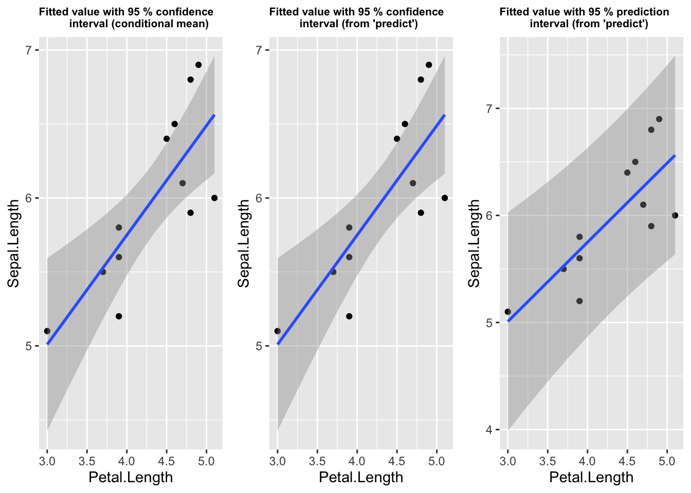

9 Means - fitted and marginal
9.1 Load necessary packages
library(dplyr)
library(ggplot2)
library(ggpubr)
library(cowplot)
library(effects)
library(emmeans)
library(DAAG)
library(ggpubr)9.2 Data - “genotype” from MASS package
Use “genotype” data from MASS package as an example (data obtained from Scheffé (1959)).
Brief details about the data follow.
Data from a foster feeding experiment with rat mothers and litters of four different genotypes: A, B, I and J. Rat litters were separated from their natural mothers at birth and given to foster mothers to rear.
The data frame has the following components:
Litter genotype of the litter.
Mother genotype of the foster mother.
Wt litter average weight gain of the litter, in grams at age 28 days (the source states that the within-litter variability is negligible).
data(genotype, package = "MASS")
gtype <- genotype
freq.cell <-
gtype %>%
count(Mother, Litter)
freq.cell## Mother Litter n
## 1 A A 5
## 2 A B 4
## 3 A I 3
## 4 A J 4
## 5 B A 3
## 6 B B 5
## 7 B I 3
## 8 B J 3
## 9 I A 4
## 10 I B 4
## 11 I I 5
## 12 I J 3
## 13 J A 5
## 14 J B 2
## 15 J I 3
## 16 J J 5Table of cell frequencies
freq.cell.mat <- matrix(freq.cell$n, nrow = 4)
rownames(freq.cell.mat) <- c("Litter_A", "Litter_B", "Litter_I", "Litter_J")
colnames(freq.cell.mat) <- c("Mother_A", "Mother_B", "Mother_I", "Mother_J")
freq.cell <- freq.cell.mat
rm(freq.cell.mat)
freq.cell## Mother_A Mother_B Mother_I Mother_J
## Litter_A 5 3 4 5
## Litter_B 4 5 4 2
## Litter_I 3 3 5 3
## Litter_J 4 3 3 5gtype %>%
count(Litter)## Litter n
## 1 A 17
## 2 B 15
## 3 I 14
## 4 J 15gtype %>%
count(Mother)## Mother n
## 1 A 16
## 2 B 14
## 3 I 16
## 4 J 15ggplot(gtype, aes(x = Mother, y = Wt, colour = Litter)) +
geom_point()
ggplot(gtype, aes(x = Litter, y = Wt, colour = Mother)) +
geom_point()
ggplot(gtype, aes(x = Litter, y = Wt,
colour = Litter)) +
geom_point() +
facet_wrap( ~ Mother, nrow = 2) +
theme(legend.position = "none") 
summary(gtype)## Litter Mother Wt
## A:17 A:16 Min. :36.30
## B:15 B:14 1st Qu.:48.20
## I:14 I:16 Median :54.00
## J:15 J:15 Mean :53.97
## 3rd Qu.:60.30
## Max. :69.80gtype %>%
group_by(Litter) %>%
summarise(mean_litter = mean(Wt),
std.dev_litter = sd(Wt))## # A tibble: 4 x 3
## Litter mean_litter std.dev_litter
## <fct> <dbl> <dbl>
## 1 A 55.1 8.63
## 2 B 54.7 7.13
## 3 I 52.9 11.3
## 4 J 53.0 5.87gtype %>%
group_by(Mother) %>%
summarise(mean_mother = mean(Wt),
std.dev_mother = sd(Wt))## # A tibble: 4 x 3
## Mother mean_mother std.dev_mother
## <fct> <dbl> <dbl>
## 1 A 55.4 9.89
## 2 B 58.7 7.24
## 3 I 53.4 6.45
## 4 J 48.7 6.309.3 Model
Explain animal weight by Litter and Mother.
Order: Litter + Mother
gtype.lm1 <- lm(Wt ~ Litter + Mother, data = gtype)
summary(gtype.lm1)##
## Call:
## lm(formula = Wt ~ Litter + Mother, data = gtype)
##
## Residuals:
## Min 1Q Median 3Q Max
## -18.425 -5.584 2.499 5.416 13.745
##
## Coefficients:
## Estimate Std. Error t value Pr(>|t|)
## (Intercept) 56.909 2.478 22.964 <2e-16 ***
## LitterB -2.025 2.795 -0.725 0.4719
## LitterI -2.654 2.827 -0.939 0.3520
## LitterJ -2.021 2.757 -0.733 0.4668
## MotherB 3.516 2.862 1.229 0.2246
## MotherI -1.832 2.767 -0.662 0.5107
## MotherJ -6.755 2.810 -2.404 0.0197 *
## ---
## Signif. codes: 0 '***' 0.001 '**' 0.01 '*' 0.05 '.' 0.1 ' ' 1
##
## Residual standard error: 7.776 on 54 degrees of freedom
## Multiple R-squared: 0.2037, Adjusted R-squared: 0.1152
## F-statistic: 2.302 on 6 and 54 DF, p-value: 0.04732anova(gtype.lm1)## Analysis of Variance Table
##
## Response: Wt
## Df Sum Sq Mean Sq F value Pr(>F)
## Litter 3 60.2 20.052 0.3317 0.802470
## Mother 3 775.1 258.360 4.2732 0.008861 **
## Residuals 54 3264.9 60.461
## ---
## Signif. codes: 0 '***' 0.001 '**' 0.01 '*' 0.05 '.' 0.1 ' ' 1Order: Mother + Litter
gtype.lm2 <- lm(Wt ~ Mother + Litter, data = gtype)
summary(gtype.lm2)##
## Call:
## lm(formula = Wt ~ Mother + Litter, data = gtype)
##
## Residuals:
## Min 1Q Median 3Q Max
## -18.425 -5.584 2.499 5.416 13.745
##
## Coefficients:
## Estimate Std. Error t value Pr(>|t|)
## (Intercept) 56.909 2.478 22.964 <2e-16 ***
## MotherB 3.516 2.862 1.229 0.2246
## MotherI -1.832 2.767 -0.662 0.5107
## MotherJ -6.755 2.810 -2.404 0.0197 *
## LitterB -2.025 2.795 -0.725 0.4719
## LitterI -2.654 2.827 -0.939 0.3520
## LitterJ -2.021 2.757 -0.733 0.4668
## ---
## Signif. codes: 0 '***' 0.001 '**' 0.01 '*' 0.05 '.' 0.1 ' ' 1
##
## Residual standard error: 7.776 on 54 degrees of freedom
## Multiple R-squared: 0.2037, Adjusted R-squared: 0.1152
## F-statistic: 2.302 on 6 and 54 DF, p-value: 0.04732Note model coefficients are the same regardless of order of explanatory terms.
anova(gtype.lm2)## Analysis of Variance Table
##
## Response: Wt
## Df Sum Sq Mean Sq F value Pr(>F)
## Mother 3 771.6 257.202 4.2540 0.009055 **
## Litter 3 63.6 21.211 0.3508 0.788698
## Residuals 54 3264.9 60.461
## ---
## Signif. codes: 0 '***' 0.001 '**' 0.01 '*' 0.05 '.' 0.1 ' ' 19.4 Fitted values using “predict”
Make a prediction grid.
pred.comb <- expand.grid(Litter = levels(gtype$Litter),
Mother = levels(gtype$Mother))
pred.comb## Litter Mother
## 1 A A
## 2 B A
## 3 I A
## 4 J A
## 5 A B
## 6 B B
## 7 I B
## 8 J B
## 9 A I
## 10 B I
## 11 I I
## 12 J I
## 13 A J
## 14 B J
## 15 I J
## 16 J J9.4.1 Fitted values (with interval = “confidence”)
This gives a 95% confidence interval for predicted mean.
For example, for Litter A with Mother A:
Note \(t_{0.975, 54} = 2.004879\).
\(56.90907 \pm 2.004879 \times 2.478191 = (51.9406, 61.8775)\)
ypred.lm1 <- data.frame(pred.comb, predict(gtype.lm1, newdata = pred.comb,
se.fit = T,
interval = "confidence"))
names(ypred.lm1)[3:5] <- c("fit", "lwr", "upr")
ypred.lm1## Litter Mother fit lwr upr se.fit df
## 1 A A 56.90907 51.94060 61.87755 2.478191 54
## 2 B A 54.88389 49.61652 60.15126 2.627276 54
## 3 I A 54.25550 48.75199 59.75900 2.745055 54
## 4 J A 54.88814 49.64332 60.13297 2.616031 54
## 5 A B 60.42496 54.94929 65.90063 2.731171 54
## 6 B B 58.39978 53.24788 63.55167 2.569678 54
## 7 I B 57.77138 52.13866 63.40411 2.809507 54
## 8 J B 58.40403 52.82074 63.98732 2.784850 54
## 9 A I 55.07696 49.91311 60.24082 2.575644 54
## 10 B I 53.05178 47.77668 58.32688 2.631131 54
## 11 I I 52.42339 47.32272 57.52405 2.544125 54
## 12 J I 53.05603 47.60151 58.51056 2.720625 54
## 13 A J 50.15438 45.11565 55.19311 2.513234 54
## 14 B J 48.12920 42.38172 53.87668 2.866746 54
## 15 I J 47.50081 41.91048 53.09114 2.788361 54
## 16 J J 48.13345 43.02595 53.24095 2.547534 54
## residual.scale
## 1 7.775661
## 2 7.775661
## 3 7.775661
## 4 7.775661
## 5 7.775661
## 6 7.775661
## 7 7.775661
## 8 7.775661
## 9 7.775661
## 10 7.775661
## 11 7.775661
## 12 7.775661
## 13 7.775661
## 14 7.775661
## 15 7.775661
## 16 7.775661ypred.lm1.mat <- matrix(ypred.lm1$fit, nrow = 4)
rownames(ypred.lm1.mat) <- c("Litter_A", "Litter_B", "Litter_I", "Litter_J")
colnames(ypred.lm1.mat) <- c("Mother_A", "Mother_B", "Mother_I", "Mother_J")
ypred.lm1.mat## Mother_A Mother_B Mother_I Mother_J
## Litter_A 56.90907 60.42496 55.07696 50.15438
## Litter_B 54.88389 58.39978 53.05178 48.12920
## Litter_I 54.25550 57.77138 52.42339 47.50081
## Litter_J 54.88814 58.40403 53.05603 48.133459.4.2 Fitted values (with interval = “prediction”)
This gives a 95% confidence interval for a single future observed value.
The SE for a single future observation is (must be!) larger than that for the predicted mean. The SE for a given observed value is \(\sqrt{[\mathrm{var(predicted \; mean)} + \widehat{\sigma^2}]}\) (see Searle, Linear Models, p. 91).
For example, for Litter A with Mother A:
Note \(t_{0.975, 54} = 2.004879\).
\(\mathrm{se} = \sqrt{2.478191^2 + 7.775661^2} = 8.161025\)
\(56.90907 \pm 2.004879 \times 8.161025 = (40.5472, 73.2709)\)
predict(gtype.lm1, newdata = pred.comb, se.fit = T,
interval = "prediction")## $fit
## fit lwr upr
## 1 56.90907 40.54720 73.27094
## 2 54.88389 38.42879 71.33899
## 3 54.25550 37.72330 70.78770
## 4 54.88814 38.44025 71.33604
## 5 60.42496 43.90200 76.94791
## 6 58.39978 41.98128 74.81828
## 7 57.77138 41.19572 74.34705
## 8 58.40403 41.84510 74.96296
## 9 55.07696 38.65471 71.49922
## 10 53.05178 36.59421 69.50936
## 11 52.42339 36.02089 68.82588
## 12 53.05603 36.54007 69.57199
## 13 50.15438 33.77104 66.53773
## 14 48.12920 31.51419 64.74422
## 15 47.50081 30.93950 64.06211
## 16 48.13345 31.72883 64.53807
##
## $se.fit
## 1 2 3 4 5 6 7
## 2.478191 2.627276 2.745055 2.616031 2.731171 2.569678 2.809507
## 8 9 10 11 12 13 14
## 2.784850 2.575644 2.631131 2.544125 2.720625 2.513234 2.866746
## 15 16
## 2.788361 2.547534
##
## $df
## [1] 54
##
## $residual.scale
## [1] 7.7756619.5 Manually fitting model using matrix algebra
Model coefficients are the same as above - as they should be!
gtype.mat <- model.matrix(gtype.lm1)
XtX.inv <- ginv( t(gtype.mat) %*% gtype.mat )
bhat <- XtX.inv %*% t(gtype.mat) %*% gtype$Wt
bhat## [,1]
## [1,] 56.909073
## [2,] -2.025180
## [3,] -2.653575
## [4,] -2.020931
## [5,] 3.515885
## [6,] -1.832111
## [7,] -6.754690bhat.df <- data.frame(param = colnames(gtype.mat), est = bhat)
bhat.df## param est
## 1 (Intercept) 56.909073
## 2 LitterB -2.025180
## 3 LitterI -2.653575
## 4 LitterJ -2.020931
## 5 MotherB 3.515885
## 6 MotherI -1.832111
## 7 MotherJ -6.7546909.6 Estimated means using model coefficients and various weights
First, get the two-way table of means.
means.cell <-
genotype %>%
group_by(Mother, Litter) %>%
summarise(wt_mean = mean(Wt))## `summarise()` has grouped output by 'Mother'. You can override using the `.groups` argument.## Form a 4 x 4 table
means.cell <- matrix(means.cell$wt_mean, nrow = 4)
rownames(means.cell) <- c("Litter_A", "Litter_B", "Litter_I", "Litter_J")
colnames(means.cell) <- c("Mother_A", "Mother_B", "Mother_I", "Mother_J")
means.cell## Mother_A Mother_B Mother_I Mother_J
## Litter_A 63.680 52.40000 54.12500 48.96000
## Litter_B 52.325 60.64000 53.92500 45.90000
## Litter_I 47.100 64.36667 51.60000 49.43333
## Litter_J 54.350 56.10000 54.53333 49.060009.6.1 Marginal means for Litter
apply(means.cell, 1, mean)## Litter_A Litter_B Litter_I Litter_J
## 54.79125 53.19750 53.12500 53.51083These are based on the data and are not the estimates returned by any package here with any weighting. Weightings used to calculate marginal means are not the ones used in the above calculation. This is because estimated marginal means are not based directly on the data but rather are derived from a model.
9.6.1.1 Estimates using “emmeans” package
9.6.1.2 “Reference grid” for emmeans
Estimated marginal means are based on a model, not directly on the raw data. They are calculated using a reference grid, which is a grid of all combinations of factors and covariates in the model.
The reference grid for the genotype model is shown; the grid includes cell counts (viz. the .wgt. column).
ref_grid(gtype.lm1) @ grid## Litter Mother .wgt.
## 1 A A 5
## 2 B A 4
## 3 I A 3
## 4 J A 4
## 5 A B 3
## 6 B B 5
## 7 I B 3
## 8 J B 3
## 9 A I 4
## 10 B I 4
## 11 I I 5
## 12 J I 3
## 13 A J 5
## 14 B J 2
## 15 I J 3
## 16 J J 5The model can be used to estimate the mean at each point in the reference grid.
ypred.ref.grid.mat <- matrix(predict(ref_grid(gtype.lm1)), nrow = 4)
rownames(ypred.ref.grid.mat) <- c("Litter_A", "Litter_B",
"Litter_I", "Litter_J")
colnames(ypred.ref.grid.mat) <- c("Mother_A", "Mother_B",
"Mother_I", "Mother_J")
ypred.ref.grid.mat## Mother_A Mother_B Mother_I Mother_J
## Litter_A 56.90907 60.42496 55.07696 50.15438
## Litter_B 54.88389 58.39978 53.05178 48.12920
## Litter_I 54.25550 57.77138 52.42339 47.50081
## Litter_J 54.88814 58.40403 53.05603 48.13345Manually calculate means in reference grid from model.
Model equation is:
\[ \hat{y} = 56.909 - 2.025 L_B - 2.654 L_I - 2.021 L_J + 3.516 M_B - 1.832 M_I - 6.755 M_J \]
Mean for Litter A with Mother A = 56.91
Mean for Litter A with Mother I = 56.909 - 1.832 = 55.08
Mean for Litter I with Mother J = 56.909 - 2.654 - 6.755 = 47.50
This shows the means calculated from the reference grid are the model-based means.
Default weighting is “equal” (i.e. equally weighted average).
gtype.emm.L <- emmeans(gtype.lm1, specs = "Litter")
gtype.emm.L## Litter emmean SE df lower.CL upper.CL
## A 55.6 1.90 54 51.8 59.4
## B 53.6 2.03 54 49.5 57.7
## I 53.0 2.09 54 48.8 57.2
## J 53.6 2.02 54 49.6 57.7
##
## Results are averaged over the levels of: Mother
## Confidence level used: 0.95gtype.emm.L.eq <- emmeans(gtype.lm1, specs = "Litter", weights = "equal")
gtype.emm.L.eq## Litter emmean SE df lower.CL upper.CL
## A 55.6 1.90 54 51.8 59.4
## B 53.6 2.03 54 49.5 57.7
## I 53.0 2.09 54 48.8 57.2
## J 53.6 2.02 54 49.6 57.7
##
## Results are averaged over the levels of: Mother
## Confidence level used: 0.95apply(ypred.ref.grid.mat, 1, mean)## Litter_A Litter_B Litter_I Litter_J
## 55.64134 53.61616 52.98777 53.62041Using weights = “proportional”
This option weights according to the number of observations in each level of the factor that’s being averaged over. See below.
gtype.emm.L.prop <- emmeans(gtype.lm1, specs = "Litter",
weights = "proportional")
gtype.emm.L.prop## Litter emmean SE df lower.CL upper.CL
## A 55.6 1.89 54 51.8 59.4
## B 53.5 2.03 54 49.5 57.6
## I 52.9 2.09 54 48.7 57.1
## J 53.6 2.02 54 49.5 57.6
##
## Results are averaged over the levels of: Mother
## Confidence level used: 0.95Get frequencies (number of observations) for each Mother. Using these gives the same result as weights = “proportional”.
num.moth <- apply(freq.cell, 2, sum)
num.moth## Mother_A Mother_B Mother_I Mother_J
## 16 14 16 15gtype.emm.L.prop2 <- emmeans(gtype.lm1, specs = "Litter",
weights = num.moth)
gtype.emm.L.prop2 ## Litter emmean SE df lower.CL upper.CL
## A 55.6 1.89 54 51.8 59.4
## B 53.5 2.03 54 49.5 57.6
## I 52.9 2.09 54 48.7 57.1
## J 53.6 2.02 54 49.5 57.6
##
## Results are averaged over the levels of: Mother
## Confidence level used: 0.95Direct calculation behind weights = “proportional”.
Get the reference grid for the model. This is the 4 x 4 table of model-based means.
For Litter A, multiply each cell mean by the corresponding total number of observations for each Mother (i.e. num.moth are the weights). Add the result and divide by the total number of observations.
t( ypred.ref.grid.mat %*% num.moth / sum(num.moth) )## Litter_A Litter_B Litter_I Litter_J
## [1,] 55.57445 53.54927 52.92088 53.553529.6.1.3 Using “confint”
This gives the same output as asking for the estimated marginal means from a given model for a given predictor (i.e. same output as “gtype.emm.L” itself).
confint(gtype.emm.L, side = "two-sided", level = 0.95)## Litter emmean SE df lower.CL upper.CL
## A 55.6 1.90 54 51.8 59.4
## B 53.6 2.03 54 49.5 57.7
## I 53.0 2.09 54 48.8 57.2
## J 53.6 2.02 54 49.6 57.7
##
## Results are averaged over the levels of: Mother
## Confidence level used: 0.959.6.2 Marginal means for Mother
Default weighting is “equal” (i.e. equally weighted average).
gtype.emm.M <- emmeans(gtype.lm1, specs = "Mother")
gtype.emm.M ## Mother emmean SE df lower.CL upper.CL
## A 55.2 1.95 54 51.3 59.1
## B 58.8 2.09 54 54.6 62.9
## I 53.4 1.95 54 49.5 57.3
## J 48.5 2.04 54 44.4 52.6
##
## Results are averaged over the levels of: Litter
## Confidence level used: 0.95gtype.emm.M.eq <- emmeans(gtype.lm1, specs = "Mother", weights = "equal")
gtype.emm.M.eq ## Mother emmean SE df lower.CL upper.CL
## A 55.2 1.95 54 51.3 59.1
## B 58.8 2.09 54 54.6 62.9
## I 53.4 1.95 54 49.5 57.3
## J 48.5 2.04 54 44.4 52.6
##
## Results are averaged over the levels of: Litter
## Confidence level used: 0.95apply(ypred.ref.grid.mat, 2, mean)## Mother_A Mother_B Mother_I Mother_J
## 55.23415 58.75004 53.40204 48.47946Using weights = “cells”
This uses cell frequencies and gives arithmetic means.
gtype.emm.L.cells <- emmeans(gtype.lm1, specs = "Litter", weights = "cells")
gtype.emm.L.cells ## Litter emmean SE df lower.CL upper.CL
## A 55.1 1.89 54 51.3 58.9
## B 54.7 2.01 54 50.6 58.7
## I 52.9 2.08 54 48.7 57.1
## J 53.0 2.01 54 48.9 57.0
##
## Results are averaged over the levels of: Mother
## Confidence level used: 0.959.6.3 Using a matrix with equal weights
Use weights for each Litter of \(\frac{1}{4}\). See notes on calculating marginal means by Cornell Stats Consult Unit
(see file “marginal means calc CornellStatsConsult.pdf”).
This gives the same result as the default equal weighting based on the model reference grid (i.e. these are the same estimates as emmmeans gives using weights = “equal”, the default weighting).
## Set up matrix with appropriate values for calculation
mean.L.bal.wt <- matrix(
c(1, 0, 0, 0, 1/4, 1/4, 1/4,
1, 1, 0, 0, 1/4, 1/4, 1/4,
1, 0, 1, 0, 1/4, 1/4, 1/4,
1, 0, 0, 1, 1/4, 1/4, 1/4),
nrow = 4, byrow = T)
mean.L.bal.wt## [,1] [,2] [,3] [,4] [,5] [,6] [,7]
## [1,] 1 0 0 0 0.25 0.25 0.25
## [2,] 1 1 0 0 0.25 0.25 0.25
## [3,] 1 0 1 0 0.25 0.25 0.25
## [4,] 1 0 0 1 0.25 0.25 0.25mean.L.bal.wt %*% bhat.df[ , 2]## [,1]
## [1,] 55.64134
## [2,] 53.61616
## [3,] 52.98777
## [4,] 53.620419.6.4 Using a matrix with proportional weights
There are 61 data values in all. The number of observations for each mother are shown below.
gtype %>%
count(Mother)## Mother n
## 1 A 16
## 2 B 14
## 3 I 16
## 4 J 15Calculating marginal means for litters using “proportional” weighting across Mother.
## Set up matrix with appropriate values for calculation
mean.L.prop.wt <- matrix(
c(1, 0, 0, 0, 14/61, 16/61, 15/61,
1, 1, 0, 0, 14/61, 16/61, 15/61,
1, 0, 1, 0, 14/61, 16/61, 15/61,
1, 0, 0, 1, 14/61, 16/61, 15/61),
nrow = 4, byrow = T)
mean.L.prop.wt## [,1] [,2] [,3] [,4] [,5] [,6] [,7]
## [1,] 1 0 0 0 0.2295082 0.2622951 0.2459016
## [2,] 1 1 0 0 0.2295082 0.2622951 0.2459016
## [3,] 1 0 1 0 0.2295082 0.2622951 0.2459016
## [4,] 1 0 0 1 0.2295082 0.2622951 0.2459016mean.L.prop.wt %*% bhat.df[ , 2]## [,1]
## [1,] 55.57445
## [2,] 53.54927
## [3,] 52.92088
## [4,] 53.55352These are the same estimates as emmmeans gives using weights = “proportional”.
9.7 Estimates using “effects” package
The “effects” package, by default, uses what is “proportional” weighting in the emmeans package.
gtype.eff.L <- effect("Litter", mod = gtype.lm1)
gtype.eff.L.df <- as.data.frame(gtype.eff.L)
gtype.eff.L.df## Litter fit se lower upper
## 1 A 55.57445 1.893599 51.77802 59.37089
## 2 B 53.54927 2.032817 49.47372 57.62483
## 3 I 52.92088 2.089806 48.73107 57.11069
## 4 J 53.55352 2.020382 49.50290 57.60414gtype.eff.all <- allEffects(gtype.lm1)
gtype.eff.all## model: Wt ~ Litter + Mother
##
## Litter effect
## Litter
## A B I J
## 55.57445 53.54927 52.92088 53.55352
##
## Mother effect
## Mother
## A B I J
## 55.30511 58.82100 53.47300 48.550429.8 Transformations and emmeans
Data is “rice” from DAAG package.
The rice data frame has 72 rows and 7 columns. The data are from an experiment that compared wild type (wt) and genetically modified rice plants (ANU843), each with three different chemical treatments (F10, NH4Cl, and NH4NO3).
data(rice, package = "DAAG")
str(rice)## 'data.frame': 72 obs. of 7 variables:
## $ PlantNo : num 1 2 3 4 5 6 7 8 9 10 ...
## $ Block : num 1 1 1 1 1 1 2 2 2 2 ...
## $ RootDryMass : num 56 66 40 43 55 66 41 67 40 35 ...
## $ ShootDryMass: num 132 120 108 134 119 125 98 122 114 82 ...
## $ trt : Factor w/ 6 levels "F10","NH4Cl",..: 1 1 1 1 1 1 1 1 1 1 ...
## $ fert : Factor w/ 3 levels "F10","NH4Cl",..: 1 1 1 1 1 1 1 1 1 1 ...
## $ variety : Factor w/ 2 levels "wt","ANU843": 1 1 1 1 1 1 1 1 1 1 ...rice$PlantNo <- factor(rice$PlantNo)
rice$Block <- factor(rice$Block)rice %>%
group_by(Block, PlantNo) %>%
count()## # A tibble: 12 x 3
## # Groups: Block, PlantNo [12]
## Block PlantNo n
## <fct> <fct> <int>
## 1 1 1 6
## 2 1 2 6
## 3 1 3 6
## 4 1 4 6
## 5 1 5 6
## 6 1 6 6
## 7 2 7 6
## 8 2 8 6
## 9 2 9 6
## 10 2 10 6
## 11 2 11 6
## 12 2 12 6rice %>%
group_by(fert, variety) %>%
count()## # A tibble: 6 x 3
## # Groups: fert, variety [6]
## fert variety n
## <fct> <fct> <int>
## 1 F10 wt 12
## 2 F10 ANU843 12
## 3 NH4Cl wt 12
## 4 NH4Cl ANU843 12
## 5 NH4NO3 wt 12
## 6 NH4NO3 ANU843 12ggplot(rice, aes(x = Block, y = ShootDryMass)) +
geom_boxplot()
ggplot(rice, aes(x = PlantNo, y = ShootDryMass)) +
geom_jitter(width = 0.1)
bw1 <- ggplot(rice, aes(x = fert, y = ShootDryMass)) +
geom_boxplot()
bw2 <- ggplot(rice, aes(x = variety, y = ShootDryMass)) +
geom_boxplot()
ggarrange(bw1, bw2, nrow = 1)
ggplot(rice, aes(x = fert, y = ShootDryMass, fill = variety)) +
geom_boxplot()
rice.lm1 <- lm(ShootDryMass ~ Block + fert * variety, data = rice)
summary(rice.lm1)##
## Call:
## lm(formula = ShootDryMass ~ Block + fert * variety, data = rice)
##
## Residuals:
## Min 1Q Median 3Q Max
## -64.333 -9.813 -0.292 11.688 48.667
##
## Coefficients:
## Estimate Std. Error t value Pr(>|t|)
## (Intercept) 115.333 5.609 20.562 < 2e-16 ***
## Block2 -14.000 4.240 -3.302 0.00156 **
## fertNH4Cl -58.083 7.344 -7.909 4.24e-11 ***
## fertNH4NO3 -35.000 7.344 -4.766 1.10e-05 ***
## varietyANU843 -101.000 7.344 -13.753 < 2e-16 ***
## fertNH4Cl:varietyANU843 97.333 10.386 9.372 1.10e-13 ***
## fertNH4NO3:varietyANU843 99.167 10.386 9.548 5.42e-14 ***
## ---
## Signif. codes: 0 '***' 0.001 '**' 0.01 '*' 0.05 '.' 0.1 ' ' 1
##
## Residual standard error: 17.99 on 65 degrees of freedom
## Multiple R-squared: 0.7736, Adjusted R-squared: 0.7527
## F-statistic: 37.01 on 6 and 65 DF, p-value: < 2.2e-16anova(rice.lm1)## Analysis of Variance Table
##
## Response: ShootDryMass
## Df Sum Sq Mean Sq F value Pr(>F)
## Block 1 3528 3528.0 10.902 0.001563 **
## fert 2 7019 3509.4 10.845 8.625e-05 ***
## variety 1 22685 22684.5 70.100 6.366e-12 ***
## fert:variety 2 38622 19311.2 59.676 1.933e-15 ***
## Residuals 65 21034 323.6
## ---
## Signif. codes: 0 '***' 0.001 '**' 0.01 '*' 0.05 '.' 0.1 ' ' 1par(mfrow = c(2, 2))
plot(rice.lm1)
par(mfrow = c(1, 1))Log-transform the response to illustrate the point of this exercise!
The analysis above clearly isn’t satisfactory but the use of emmeans here is the point.
rice$logShootDM <- log(rice$ShootDryMass)
bw3 <- ggplot(rice, aes(x = fert, y = logShootDM)) +
geom_boxplot()
bw4 <- ggplot(rice, aes(x = variety, y = logShootDM)) +
geom_boxplot()
ggarrange(bw3, bw4, nrow = 1)
rice.lm2 <- lm(logShootDM ~ Block + fert * variety, data = rice)
summary(rice.lm2)##
## Call:
## lm(formula = logShootDM ~ Block + fert * variety, data = rice)
##
## Residuals:
## Min 1Q Median 3Q Max
## -1.79849 -0.19150 0.06138 0.20177 1.10562
##
## Coefficients:
## Estimate Std. Error t value Pr(>|t|)
## (Intercept) 4.6764 0.1376 33.991 < 2e-16 ***
## Block2 -0.0709 0.1040 -0.682 0.498
## fertNH4Cl -0.7823 0.1801 -4.343 5.03e-05 ***
## fertNH4NO3 -0.3878 0.1801 -2.153 0.035 *
## varietyANU843 -2.8779 0.1801 -15.977 < 2e-16 ***
## fertNH4Cl:varietyANU843 2.8093 0.2547 11.028 < 2e-16 ***
## fertNH4NO3:varietyANU843 2.8522 0.2547 11.196 < 2e-16 ***
## ---
## Signif. codes: 0 '***' 0.001 '**' 0.01 '*' 0.05 '.' 0.1 ' ' 1
##
## Residual standard error: 0.4412 on 65 degrees of freedom
## Multiple R-squared: 0.8326, Adjusted R-squared: 0.8171
## F-statistic: 53.87 on 6 and 65 DF, p-value: < 2.2e-16Get the estimated marginal means of fertiliser for each variety.
Note these estimates are on the log scale.
rice_emm_f_v <- emmeans(rice.lm2, pairwise ~ fert | variety)
summary(rice_emm_f_v)## $emmeans
## variety = wt:
## fert emmean SE df lower.CL upper.CL
## F10 4.64 0.127 65 4.39 4.90
## NH4Cl 3.86 0.127 65 3.60 4.11
## NH4NO3 4.25 0.127 65 4.00 4.51
##
## variety = ANU843:
## fert emmean SE df lower.CL upper.CL
## F10 1.76 0.127 65 1.51 2.02
## NH4Cl 3.79 0.127 65 3.54 4.04
## NH4NO3 4.23 0.127 65 3.97 4.48
##
## Results are averaged over the levels of: Block
## Confidence level used: 0.95
##
## $contrasts
## variety = wt:
## contrast estimate SE df t.ratio p.value
## F10 - NH4Cl 0.782 0.18 65 4.343 0.0001
## F10 - NH4NO3 0.388 0.18 65 2.153 0.0872
## NH4Cl - NH4NO3 -0.394 0.18 65 -2.190 0.0805
##
## variety = ANU843:
## contrast estimate SE df t.ratio p.value
## F10 - NH4Cl -2.027 0.18 65 -11.253 <.0001
## F10 - NH4NO3 -2.464 0.18 65 -13.681 <.0001
## NH4Cl - NH4NO3 -0.437 0.18 65 -2.428 0.0466
##
## Results are averaged over the levels of: Block
## P value adjustment: tukey method for comparing a family of 3 estimatesBacktransform the estimates to the natural scale. Note this code comes from the built-in help for emmeans.
rice_emm_f_v_bt <- emmeans(rice.lm2, pairwise ~ fert | variety,
options = list(tran = "log"),
type = "response")
summary(rice_emm_f_v_bt)## $emmeans
## variety = wt:
## fert response SE df lower.CL upper.CL
## F10 103.65 13.202 65 80.37 133.67
## NH4Cl 47.40 6.038 65 36.76 61.13
## NH4NO3 70.33 8.958 65 54.53 90.70
##
## variety = ANU843:
## fert response SE df lower.CL upper.CL
## F10 5.83 0.743 65 4.52 7.52
## NH4Cl 44.26 5.637 65 34.32 57.08
## NH4NO3 68.54 8.730 65 53.14 88.39
##
## Results are averaged over the levels of: Block
## Confidence level used: 0.95
## Intervals are back-transformed from the log scale
##
## $contrasts
## variety = wt:
## contrast ratio SE df t.ratio p.value
## F10 / NH4Cl 2.1866 0.3939 65 4.343 0.0001
## F10 / NH4NO3 1.4738 0.2655 65 2.153 0.0872
## NH4Cl / NH4NO3 0.6740 0.1214 65 -2.190 0.0805
##
## variety = ANU843:
## contrast ratio SE df t.ratio p.value
## F10 / NH4Cl 0.1317 0.0237 65 -11.253 <.0001
## F10 / NH4NO3 0.0851 0.0153 65 -13.681 <.0001
## NH4Cl / NH4NO3 0.6457 0.1163 65 -2.428 0.0466
##
## Results are averaged over the levels of: Block
## P value adjustment: tukey method for comparing a family of 3 estimates
## Tests are performed on the log scaleFurther, to get confidence intervals for the contrasts, do the following. Note that you use the emmeans object, not the summary of that object!
confint(rice_emm_f_v_bt$contrasts)## variety = wt:
## contrast ratio SE df lower.CL upper.CL
## F10 / NH4Cl 2.1866 0.3939 65 1.4195 3.368
## F10 / NH4NO3 1.4738 0.2655 65 0.9567 2.270
## NH4Cl / NH4NO3 0.6740 0.1214 65 0.4376 1.038
##
## variety = ANU843:
## contrast ratio SE df lower.CL upper.CL
## F10 / NH4Cl 0.1317 0.0237 65 0.0855 0.203
## F10 / NH4NO3 0.0851 0.0153 65 0.0552 0.131
## NH4Cl / NH4NO3 0.6457 0.1163 65 0.4192 0.995
##
## Results are averaged over the levels of: Block
## Confidence level used: 0.95
## Conf-level adjustment: tukey method for comparing a family of 3 estimates
## Intervals are back-transformed from the log scale